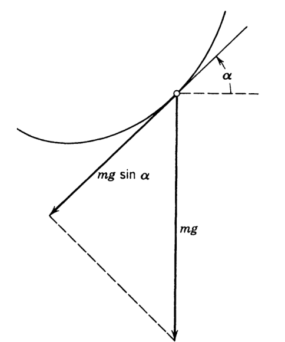
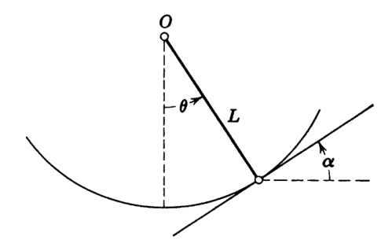

微积分的早期发展深受几何学的推动，力学概念也起了同样重要的作用。力学建立在牛顿首先提出的若干基本原理之上。表述这些原理需要导数的概念，应用它们则需要积分理论。这里不详析牛顿的各项原理，只以几个简单例子说明微积分如何应用于力学。
a. 牛顿运动定律
我们只考虑一个质点，即设想质量 m m m x , y x,y x , y t t t x = x ( t ) , y = y ( t ) x=x(t),\ y=y(t) x = x ( t ) , y = y ( t ) R = R ( t ) = ( x ( t ) , y ( t ) ) \mathbf R=\mathbf R(t)=(x(t),y(t)) R = R ( t ) = ( x ( t ) , y ( t )) t t t R ˙ = ( x ˙ , y ˙ ) \dot{\mathbf R}=(\dot x,\dot y) R ˙ = ( x ˙ , y ˙ ) R ¨ = ( x ¨ , y ¨ ) \ddot{\mathbf R}=(\ddot x,\ddot y) R ¨ = ( x ¨ , y ¨ )
力学把点的运动同作用于该点、具有确定大小和方向的力联系起来。力也用向量 F = ( ρ , σ ) \mathbf F=(\rho,\sigma) F = ( ρ , σ ) F 1 , F 2 , … \mathbf F_1,\mathbf F_2,\ldots F 1 , F 2 , … 合力 F = F 1 + F 2 + ⋯ \mathbf F=\mathbf F_1+\mathbf F_2+\cdots F = F 1 + F 2 + ⋯ 牛顿基本定律 说，质量乘以加速度等于作用在质点上的力，即
m R ¨ = F . (43)
m\ddot{\mathbf R}=\mathbf F.\tag{43}
m R ¨ = F . ( 43 ) 用分量写出这一向量方程，得等价的两个方程
m x ¨ = ρ , m y ¨ = σ . (44)
m\ddot x=\rho,\qquad m\ddot y=\sigma.\tag{44}
m x ¨ = ρ , m y ¨ = σ . ( 44 ) 因为加速度和力只差一个正因子 m m m F = 0 \mathbf F=\mathbf0 F = 0 x , y x,y x , y t t t
在最初的意义上，m R ¨ = F m\ddot{\mathbf R}=\mathbf F m R ¨ = F F \mathbf F F ρ , σ \rho,\sigma ρ , σ t t t m x ¨ , m y ¨ m\ddot x,m\ddot y m x ¨ , m y ¨ x , y , x ˙ , y ˙ , t x,y,\dot x,\dot y,t x , y , x ˙ , y ˙ , t 运动方程 。它们是微分方程，即函数及其导数之间的关系。解出它们，即求出满足运动方程的所有函数对 x ( t ) , y ( t ) x(t),y(t) x ( t ) , y ( t )
b. 落体运动
最简单的已知力是作用于地面附近质点的重力。由直接观察可知，撇开空气阻力，一切落体都具有竖直向下的加速度，大小 g g g g g g 32.16 32.16 32.16
原注 1（第 398 页） g g g
取 y y y x x x R ¨ = ( x ¨ , y ¨ ) \ddot{\mathbf R}=(\ddot x,\ddot y) R ¨ = ( x ¨ , y ¨ ) x ¨ = 0 , y ¨ = − g \ddot x=0,\ \ddot y=-g x ¨ = 0 , y ¨ = − g m m m F = ( 0 , − m g ) \mathbf F=(0,-mg) F = ( 0 , − m g ) m g mg m g
约去 m m m x ¨ = 0 , y ¨ = − g \ddot x=0,\ \ddot y=-g x ¨ = 0 , y ¨ = − g t t t x ˙ = a , y ˙ = − g t + b \dot x=a,\ \dot y=-gt+b x ˙ = a , y ˙ = − g t + b a , b a,b a , b
x = a t + c , y = − 1 2 g t 2 + b t + d ,
x=at+c,\qquad y=-\tfrac12gt^2+bt+d,
x = a t + c , y = − 2 1 g t 2 + b t + d , 其中 c , d c,d c , d a , b , c , d a,b,c,d a , b , c , d t = 0 t=0 t = 0 ( x 0 , y 0 ) (x_0,y_0) ( x 0 , y 0 ) c = x 0 , d = y 0 c=x_0,\ d=y_0 c = x 0 , d = y 0 R ˙ = ( a , − g t + b ) \dot{\mathbf R}=(a,-gt+b) R ˙ = ( a , − g t + b ) t = 0 t=0 t = 0 ( a , b ) (a,b) ( a , b ) ( c , d ) (c,d) ( c , d ) ( a , b ) (a,b) ( a , b )
当 a ≠ 0 a\ne0 a = 0 t t t
y = − g 2 a 2 ( x − c ) 2 + b a ( x − c ) + d .
y=-\frac{g}{2a^2}(x-c)^2+\frac ba(x-c)+d.
y = − 2 a 2 g ( x − c ) 2 + a b ( x − c ) + d . 所以轨道是一条抛物线。当 a = 0 a=0 a = 0 x = c x=c x = c
c. 质点被约束在给定曲线上的运动
力学中的大多数问题，质点所受的力依赖于它的位置和速度。一般而言，运动方程太复杂，难于求得一切可能运动。如果质点所描的曲线 C C C C C C L L L m m m P 0 P_0 P 0 P 0 P_0 P 0 L L L
沿 C C C s s s x = x ( s ) , y = y ( s ) x=x(s),\ y=y(s) x = x ( s ) , y = y ( s ) C C C s s s t t t m R ¨ = F m\ddot{\mathbf R}=\mathbf F m R ¨ = F ξ \boldsymbol\xi ξ m R ¨ ⋅ ξ = F ⋅ ξ m\ddot{\mathbf R}\cdot\boldsymbol\xi=\mathbf F\cdot\boldsymbol\xi m R ¨ ⋅ ξ = F ⋅ ξ ξ = d R / d s \boldsymbol\xi=d\mathbf R/ds ξ = d R / d s s s s f = F ⋅ ξ f=\mathbf F\cdot\boldsymbol\xi f = F ⋅ ξ R ¨ ⋅ ξ \ddot{\mathbf R}\cdot\boldsymbol\xi R ¨ ⋅ ξ d v / d t = d 2 s / d t 2 dv/dt=d^2s/dt^2 d v / d t = d 2 s / d t 2
m s ¨ = f . (45)
m\ddot s=f.\tag{45}
m s ¨ = f . ( 45 ) 质点质量乘以沿轨道的加速度，等于沿运动方向作用的力。
将此方程应用于受约束只能沿 C C C f f f F = ( ρ , σ ) \mathbf F=(\rho,\sigma) F = ( ρ , σ )
f = ρ d x d s + σ d y d s , (46)
f=\rho\frac{dx}{ds}+\sigma\frac{dy}{ds},\tag{46}
f = ρ d s d x + σ d s d y , ( 46 ) 因为 ξ \boldsymbol\xi ξ d x / d s , d y / d s dx/ds,dy/ds d x / d s , d y / d s C C C d x / d s , d y / d s dx/ds,dy/ds d x / d s , d y / d s s s s f f f s s s m s ¨ = f ( s ) m\ddot s=f(s) m s ¨ = f ( s )
原注 1（第 400 页） 约束装置实际须提供力，使质点保持在 C C C
特别地，当力为重力 F = ( 0 , − m g ) \mathbf F=(0,-mg) F = ( 0 , − m g )
f = − m g d y d s , (46a)
f=-mg\frac{dy}{ds},\tag{46a}
f = − m g d s d y , ( 46a ) 所以重力下约束于 C C C
d 2 s d t 2 = − g d y d s . (47)
\frac{d^2s}{dt^2}=-g\frac{dy}{ds}.\tag{47}
d t 2 d 2 s = − g d s d y . ( 47 ) 若 α \alpha α d y / d s = sin α dy/ds=\sin\alpha d y / d s = sin α d 2 s / d t 2 = − g sin α d^2s/dt^2=-g\sin\alpha d 2 s / d t 2 = − g sin α

图 4.43 重力作用下沿给定曲线的运动 若质点被限制在以原点为圆心、半径为 L L L x = L sin θ , y = − L cos θ x=L\sin\theta,\ y=-L\cos\theta x = L sin θ , y = − L cos θ θ = s / L \theta=s/L θ = s / L α = θ \alpha=\theta α = θ
d 2 s d t 2 = − g d y d θ d θ d s = − g sin θ , d 2 θ d t 2 = − g L sin θ .
\frac{d^2s}{dt^2}=-g\frac{dy}{d\theta}\frac{d\theta}{ds}=-g\sin\theta,\qquad
\frac{d^2\theta}{dt^2}=-\frac gL\sin\theta.
d t 2 d 2 s = − g d θ d y d s d θ = − g sin θ , d t 2 d 2 θ = − L g sin θ . 
图 4.44 单摆
译者注 这里 s s s s ˙ \dot s s ˙